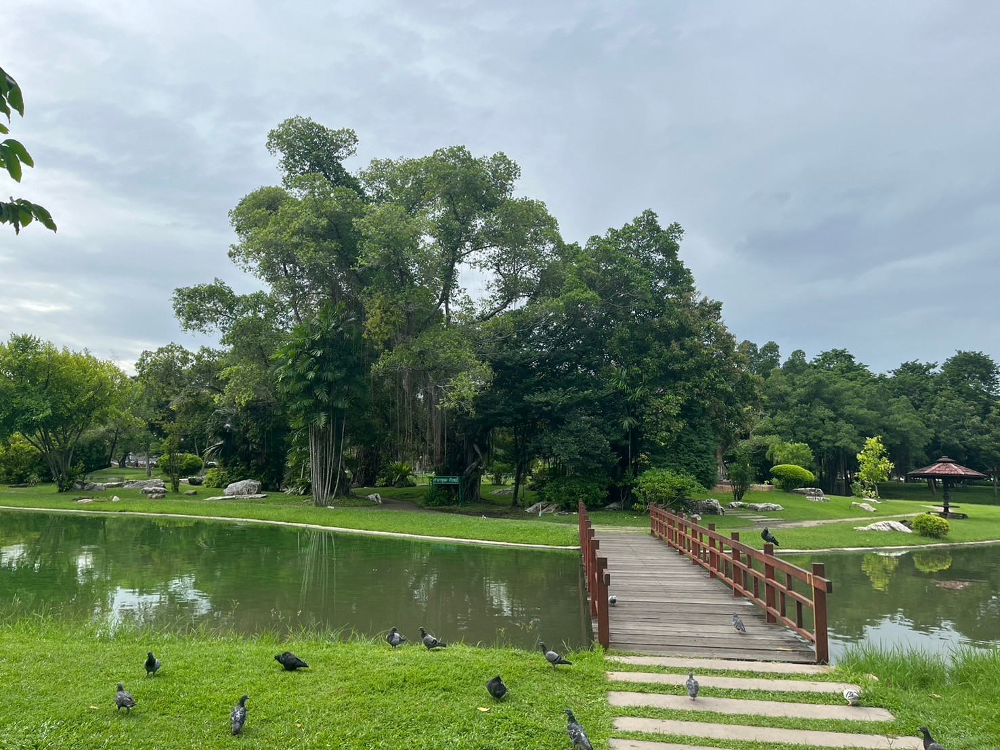
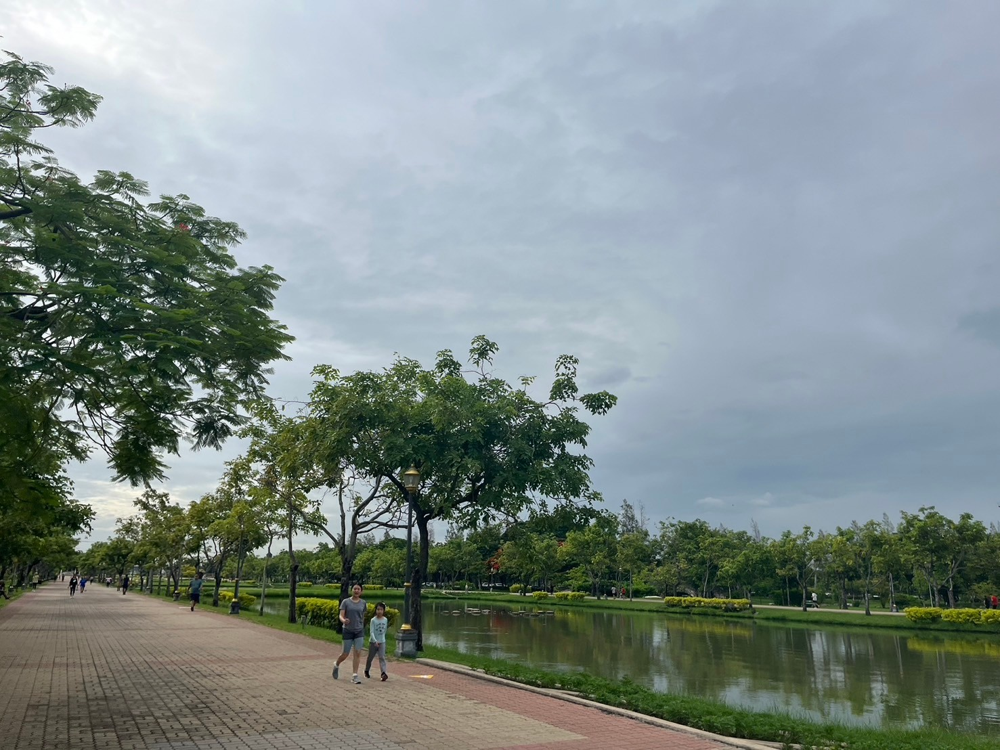
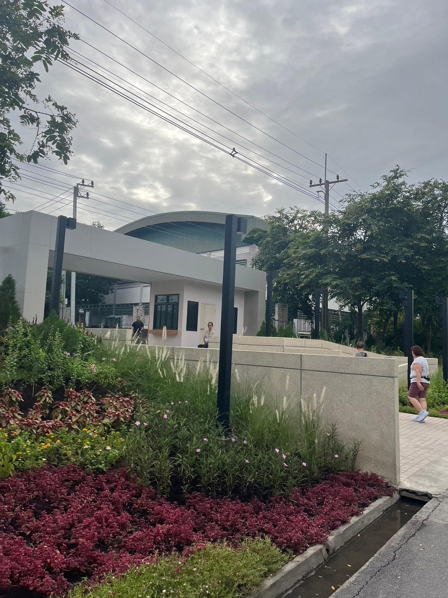

General information
เป็นสวนสาธารณะและสวนพฤกษศาสตร์ที่ใหญ่ที่สุดในกรุงเทพฯ มีพื้นที่ทั้งหมด 500 ไร่ ประกอบด้วยอาคารเทิดพระเกียรติ สวนพฤกษศาสตร์ และสวนตกแต่งหลากสไตล์
สวนสาธารณะและสวนพฤกษศาสตร์ที่ขึ้นชื่อว่ามีขนาดใหญ่ที่สุดในกรุงเทพมหานคร ด้วยอาณาบริเวณที่กว้างขวางถึง 500 ไร่ แบ่งพื้นที่ให้เข้าเยี่ยมชมได้ทั้งหมด 6 จุด ได้แก่ - บริเวณ ที่ 1 อุทยานมหาราช ประกอบด้วยหอรัชมงคล ด้านหน้าเป็นสวนราชพฤกษ์และสระน้ำพุขนาดใหญ่ 3 สระ ตกแต่งด้วยไม้ดอกไม้ประดับสวยงาม - บริเวณที่ 2 เป็นสวนพฤกษศาสตร์ขนาดใหญ่ ละลานตาไปด้วยพรรณไม้นานาชนิด ที่ปลูกตาม หลักอนุกรมวิธานและนิเวศวิทยา - บริเวณที่ 3 คือตระพังแก้วเก็บน้ำ เป็นที่รองรับน้ำเพื่อบรรเทาปัญหาน้ำท่วมขังและยังใช้ประโยชน์ เพื่อกิจกรรมทางน้ำ ริมฝั่งเป็นที่ตั้งของอาคารชายชล ซึ่งเป็นที่ทำงานของคณะกรรมการบริหาร สวนหลวง ร.9 มูลนิธิสวนหลวง ร.9 ร้านขายของที่ระลึกและร้านอาหาร - บริเวณที่ 4 คือสวนรมณีย์ เป็นสวนที่ทำเลียนแบบธรรมชาติ โดยนำหินธรรมชาติจากหลายภาค ของประเทศมาจัดวางให้ดูเป็นป่าเขา พร้อมนำพรรณไม้จากป่าต่าง ๆ มาปลูกให้ดูผสมกลมกลืนเสมือน ธรรมชาติของป่าเขา น้ำตกและลำธาร มาไว้ใจกลางเมือง - บริเวณที่ 5 เป็นพื้นที่ของสวนน้ำตามพระราชดำริของพระบาทสมเด็จพระเจ้าอยู่หัว เพื่อจำลองให้คล้ายกับ "พรุ" ตามสภาพธรรมชาติ และใช้สำหรับศึกษาและให้ความรื่นรมย์แก่ผู้เข้าชม - บริเวณที่ 6 เป็นสนามราษฎร์และศูนย์กีฬา เป็นพื้นที่อเนกประสงค์ มีสนามกว้างและสังคีตศาลา ซึ่งเป็นเวทีแสดงกลางแจ้ง สำหรับใช้เป็นสถานที่จัดกิจกรรมต่าง ๆ ภายในสวนหลวง ร.9 ยังมีสวนนานาชาติ ที่จัดแสดงลักษณะสวนของประเทศต่าง ๆ เช่น สวนจีน สวนญี่ปุ่น สวนสเปน สวนอังกฤษ สวนฝรั่งเศส และสวนอิตาลี สำหรับสวนของประเทศสหรัฐอเมริกา ได้จัดสร้างเป็นอาคารจิโอเดสิคโดมเพื่อใช้สำหรับปลูกรวบรวมพืชทนแล้ง
View From Suanluang


Suanluang To Nongbon

เมื่อเข้ามาสวนหลวงทางประตู 5 สามารถเดินมาทางซ้ายเพื่อเชื่อมไปถึงบึงหนองบอนได้